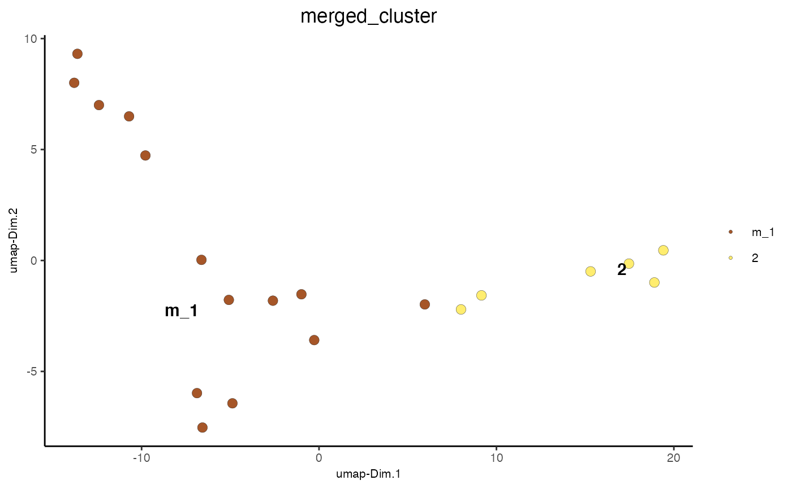

Merge selected clusters based on pairwise correlation scores and size of cluster.
mergeClusters( gobject, expression_values = c("normalized", "scaled", "custom"), cluster_column, cor = c("pearson", "spearman"), new_cluster_name = "merged_cluster", min_cor_score = 0.8, max_group_size = 20, force_min_group_size = 10, max_sim_clusters = 10, return_gobject = TRUE, verbose = TRUE )
Arguments
| gobject | giotto object |
|---|---|
| expression_values | expression values to use |
| cluster_column | name of column to use for clusters |
| cor | correlation score to calculate distance |
| new_cluster_name | new name for merged clusters |
| min_cor_score | min correlation score to merge pairwise clusters |
| max_group_size | max cluster size that can be merged |
| force_min_group_size | size of clusters that will be merged with their most similar neighbor(s) |
| max_sim_clusters | maximum number of clusters to potentially merge to reach force_min_group_size |
| return_gobject | return giotto object |
| verbose | be verbose |
Value
Giotto object
Details
Merge selected clusters based on pairwise correlation scores and size of cluster.
To avoid large clusters to merge the max_group_size can be lowered. Small clusters can
be forcibly merged with their most similar pairwise cluster by adjusting the
force_min_group_size parameter. Clusters smaller than this value will be merged
independent on the provided min_cor_score value. The force_min_group_size might not always
be reached if clusters have already been merged before
A giotto object is returned by default, if FALSE then the merging vector will be returned.
Examples
#> cell_ID nr_genes perc_genes total_expr leiden_clus cell_types #> 1: cell_2 13 65 111.98320 3 cell C #> 2: cell_7 15 75 115.73030 3 cell C #> 3: cell_12 11 55 95.49802 1 cell A #> 4: cell_15 12 60 99.94782 3 cell C #> 5: cell_17 13 65 111.32963 2 cell B #> 6: cell_30 11 55 96.64302 3 cell C #> 7: cell_37 6 30 57.77777 2 cell B #> 8: cell_40 9 45 82.84693 2 cell B #> 9: cell_44 9 45 79.93838 2 cell B #> 10: cell_53 9 45 82.40747 1 cell A #> 11: cell_64 8 40 73.06345 1 cell A #> 12: cell_74 11 55 93.04295 3 cell C #> 13: cell_85 8 40 73.72574 1 cell A #> 14: cell_86 14 70 115.75186 1 cell A #> 15: cell_90 11 55 93.02181 1 cell A #> 16: cell_95 6 30 59.55714 1 cell A #> 17: cell_96 10 50 88.31757 1 cell A #> 18: cell_107 16 80 130.62640 1 cell A #> 19: cell_113 12 60 99.83100 2 cell B #> 20: cell_118 14 70 117.63523 2 cell Bmini_giotto_single_cell = mergeClusters(mini_giotto_single_cell, cluster_column = 'leiden_clus', min_cor_score = 0.7, force_min_group_size = 4) pDataDT(mini_giotto_single_cell)#> cell_ID nr_genes perc_genes total_expr leiden_clus cell_types #> 1: cell_2 13 65 111.98320 3 cell C #> 2: cell_7 15 75 115.73030 3 cell C #> 3: cell_12 11 55 95.49802 1 cell A #> 4: cell_15 12 60 99.94782 3 cell C #> 5: cell_17 13 65 111.32963 2 cell B #> 6: cell_30 11 55 96.64302 3 cell C #> 7: cell_37 6 30 57.77777 2 cell B #> 8: cell_40 9 45 82.84693 2 cell B #> 9: cell_44 9 45 79.93838 2 cell B #> 10: cell_53 9 45 82.40747 1 cell A #> 11: cell_64 8 40 73.06345 1 cell A #> 12: cell_74 11 55 93.04295 3 cell C #> 13: cell_85 8 40 73.72574 1 cell A #> 14: cell_86 14 70 115.75186 1 cell A #> 15: cell_90 11 55 93.02181 1 cell A #> 16: cell_95 6 30 59.55714 1 cell A #> 17: cell_96 10 50 88.31757 1 cell A #> 18: cell_107 16 80 130.62640 1 cell A #> 19: cell_113 12 60 99.83100 2 cell B #> 20: cell_118 14 70 117.63523 2 cell B #> merged_cluster #> 1: m_1 #> 2: m_1 #> 3: m_1 #> 4: m_1 #> 5: 2 #> 6: m_1 #> 7: 2 #> 8: 2 #> 9: 2 #> 10: m_1 #> 11: m_1 #> 12: m_1 #> 13: m_1 #> 14: m_1 #> 15: m_1 #> 16: m_1 #> 17: m_1 #> 18: m_1 #> 19: 2 #> 20: 2